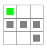
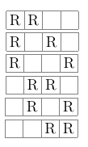

Here we describe, how to calculate number of paths in matrix. At first, define what is the problem. Imagine that you have matrix, like one below:

What we want to determine is, how many distinct paths we have, when going from A to B. Important is that we are saying about paths that can overlap.
Calculation to get answer is very simple, yet here we show step by step, how we get to that. At first define two variables, which describe width and height of the grid, here it is \(W = 4, H = 6\) (actually we seek coordinates of our target, which in this case are the same).
First thing to notice is, that regardless of path, number of steps to be taken is always the same, overall we need to take 3 steps right and 5 steps down.
Therefore our steps that we need to take are equal to:
Steps right = \(W - 1 = 4 - 1 = 3\)
Steps down = \(H - 1 = 6 - 1 = 5\)
Each path that we want to find, has a total length of 8, which can be written down as:
\((W-1) + (H-1) = (W + H) - 2\)
Out of these paths, we simply look for paths that are either 3 steps right (so other 5 steps have to be down) or 5 steps down. Anyway, this will lead to the same calculation, where we select combinations for 3 (or 5) out of 8. This means that we need to calculate binomial:
\(\binom{8}{5} = \frac{8!}{5!(8-5!)} = \frac{8!}{5!3!}\)
If we start from another value, we still get the same result:
\(\binom{8}{3} = \frac{8!}{3!(8-3!)} = \frac{8!}{3!5!}\)
So, in general we can write equation to calculate total number of paths as follows:
\(\frac{(W+H-2)!}{(W-1)!(H-1)!} = \binom{W+H-2}{W-1} = \binom{W+H-2}{H-1}\)
Let us go to a smaller example, to make things clear. Let's take matrix \(3x3\), like one below:
We want to go from point \((1,1)\) to \((3,3)\), our \(W = 3\) and \(H = 3\). We can see that we need to make 4 steps to get there, e.g.
So, we have four steps to fulfil, where two of them go right (R) and two of them go down (D). We can therefore simply ask: how many combinations are there, where we select e.g. right steps out of total steps? It leads to following solutions in this example:
In each situation, free slots will be populated by moves down. Of course, we could ask this question another way round, but still final equation will be the same. Answer comes from combinatorics - number of combinations. As it was given earlier, it is calculated from binomial \(\binom{W+H-2}{W-1}\). It can be also denoted in different ways, if \(W+H-2 = n\) and \(W-1 = k\), we can find following notations: \(C(n,k), C_k^n, _nC_k, ^nC_k, C_{n,k}\).